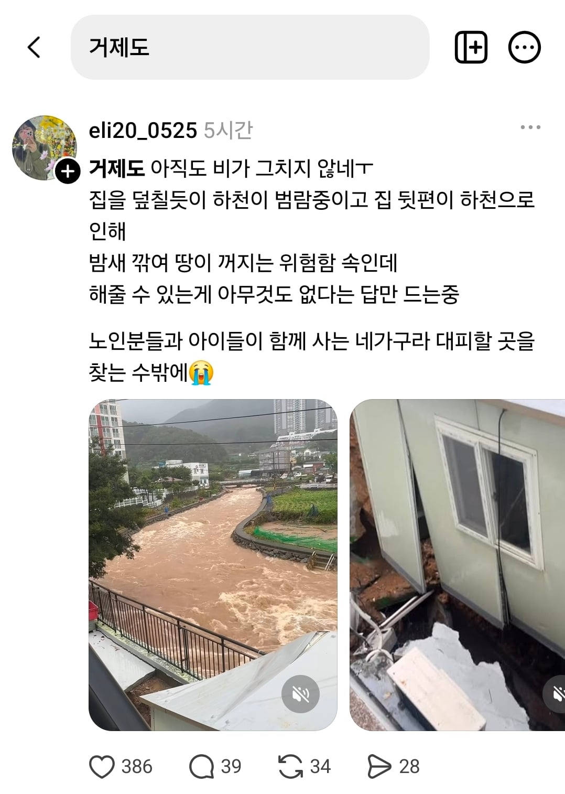
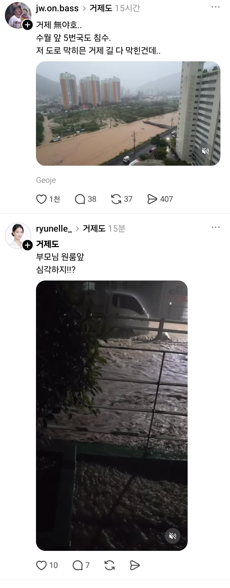
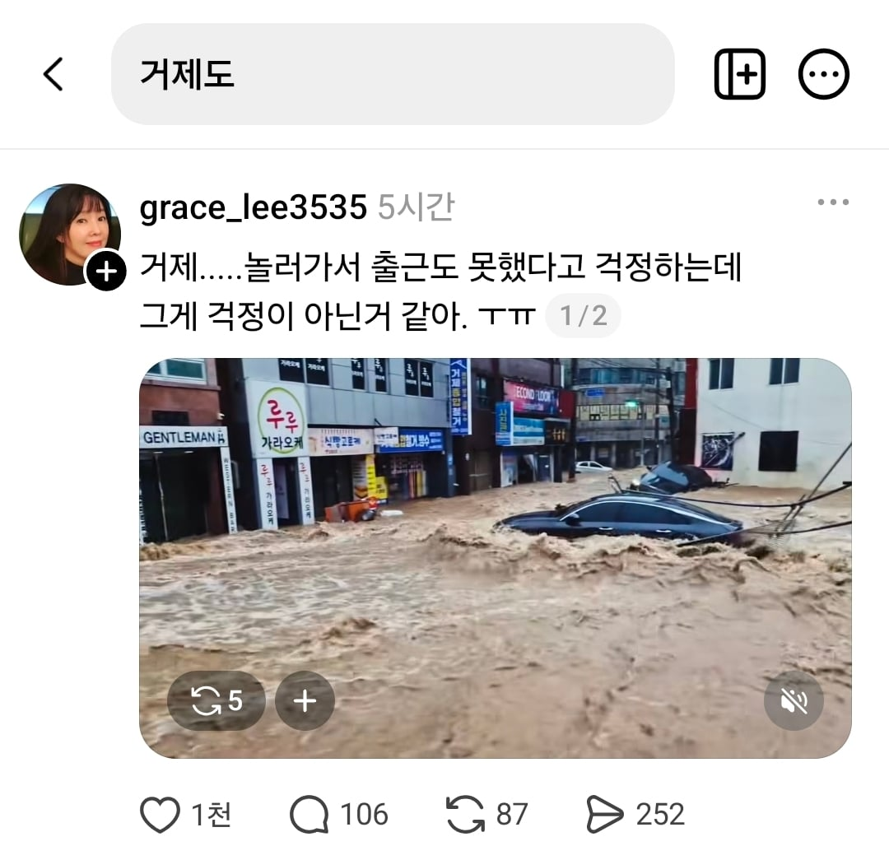
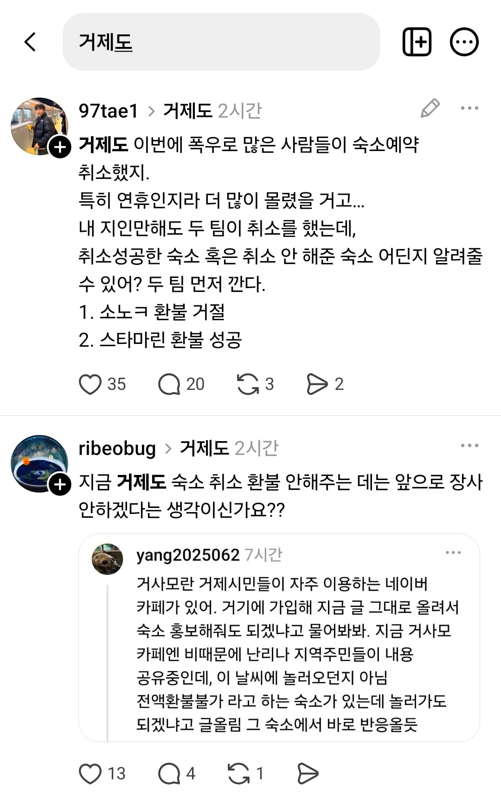
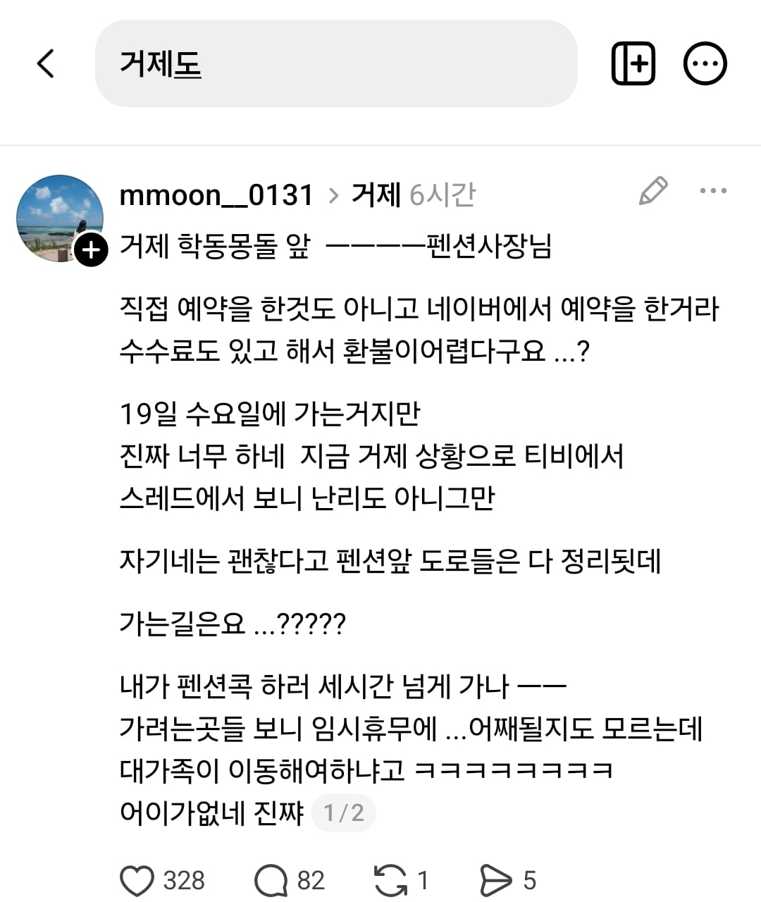
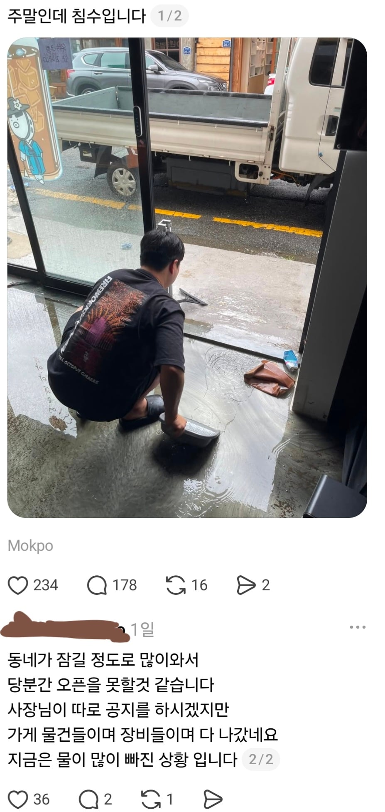

거제도로만 검색해도 지금 비 피해가 어마어마한게 보임;;;
거제도 사는 개붕이들 피해 없길 바란다ㅠ
유튜브에도 거제도만 쳤는데 연관검색어ㅠ


이런데도 취소 안해주는 펜션 사장님들때문에 민심도 안좋아짐;
물론 해주는 곳들도 있는데
뻐팅기는 곳이 얼마나 많은지 사람들 반응ㄷㄷ
바로 한달전에도 이렇게 홍보해놔서
급한 곳들 수습하고 나면 저기 거부한곳들 부메랑처럼 돌아올듯

목포쪽 가게인데 여기도
문 며칠 못열정도로 비가 왔다고 ㄷㄷ
해당 지역 사는 개붕이들 별일없길바람;;
댓글
수집 당시 댓글 23개
퐁퐁이 · 4 일 전
이게 이론은 있지만 법적 강제성이 없어버림 대기업이나 소보원 권고 따르고 중재 따르난데 그 이외는 그냥 "알아서 하세요" 함
베레타38 · 3 일 전
어허 권고사항
코노 · 4 일 전
펜션을 간다는 생각을 했으면 저정도는 감내해야지.
박박박이 · 3 일 전
천재지변은 환불안해줘도되는거 아니였음? 일본갔을때 간사이공항 태풍에 물에 잠겨서 개좆빠지게 일본 종단갈기고 겨우겨우 귀국한뒤로 머 시바 보험이나 항공권취소금액좀 돌려주이소 갈기니까 천재지변은 그런거 없다그랬는데 씹 ㅋㅋㅋ
ㅠㅗㅣㅏㅜㅗ · 3 일 전
그건비행기
옴뇸뇸뇸영국요리 · 2 일 전
보험은 천재지변 안되는게 있지
븅신 · 3 일 전
그냥 저런거 올리고 뭐하고 할시간에 바로 소보원 연락하면됌
춘천맨 · 3 일 전
대한민국에 소보원 이라는 기관은 없다.
글렌모렌지시그넷 · 3 일 전
부모님이 원룸사나 했는데 부모님 소유의 원룸 건물인건가
달빛찬가 · 3 일 전
둘중하나
항히스타민제 · 3 일 전
됫데는 좀 어지럽네
젤상혁 · 3 일 전
중국 롯데라는 뜻입니다
항히스타민제 · 3 일 전
오?
걔드립넷 · 3 일 전
저런거는 그냥 이름 까고 공개해야지
춘천맨 · 3 일 전
~~했데. 이렇게 쓰는새끼들 왜이렇게 많아졌지
모띠 · 3 일 전
그걸 왜 환불해줘야함? 환불은 도의적으로 훗날 장사 생각해서 해주는거지 안해줘도 괜찮은거임 폭우때문에 펜션이 망가졌거나 사용불가능한 상태로 변한거도 아닌데 예약이라는게 결국 그날짜에 사용 하겠다는 계약을 하는건데 본인이 그 날짜 선택해서 예약한거고 그러면 BTS 공연할때 그쪽 숙박업소들이 환불한건 안되고 이건 또 괜찮은거임?
한대만때려도되냐 · 3 일 전
BTS 공연 환불은 내 의사와 달리 업체에서 맘대로 취소한 거 아님? 민법에 따라 천재지변에 의한 계약취소는 그냥 당연한 거임. 저게 천재지변이 아니면 거제도가 아예 없어져야 천재지변이냐?
보통곰 · 3 일 전
천재지변으로 숙소를 이용 못해야 취소사유가 될텐데 숙소에는 문제 없으면 법적 취소사유는 아닐듯
한대만때려도되냐 · 3 일 전
소보원의 상세기준을 보면 천재지변에 의한 숙소환불 기준을 경보가 있는 경우라고 규정하고 있기에 가능할 것
보통곰 · 2 일 전
소보원의 기준은 법적 강제력이 없음 민법 제674조의2 이하 규정은 여행계약에 적용되는 규정으로 숙박계약과 같은 일시사용을 위한 임대차에 적용되는 규정이 아님
모띠 · 3 일 전
민법에 천재지변에 의한 계약취소는 없고(국제상사법 force majure랑 헷갈리신듯?) 후발적 불능에 의한 무효 등은 있을 수 있음. 근데 이 케이스는 그런 케이스는 아님..
한대만때려도되냐 · 2 일 전
674조의4 말하는 거임
모띠 · 10 시간 전
여행계약이거요 그거는.. 그리고 해지랑 취소랑 다른거임